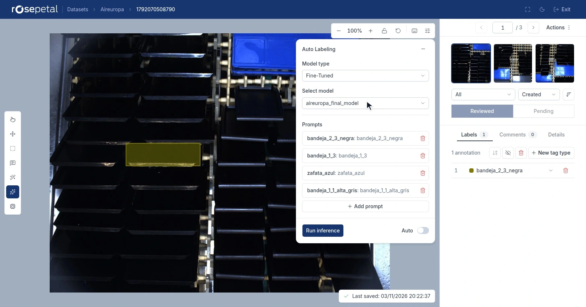
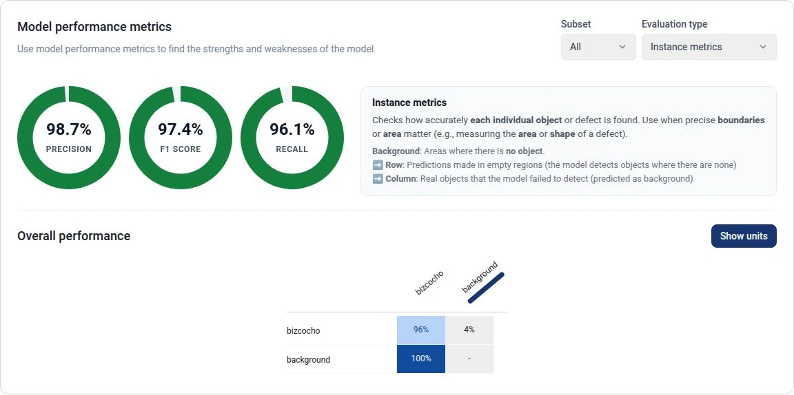
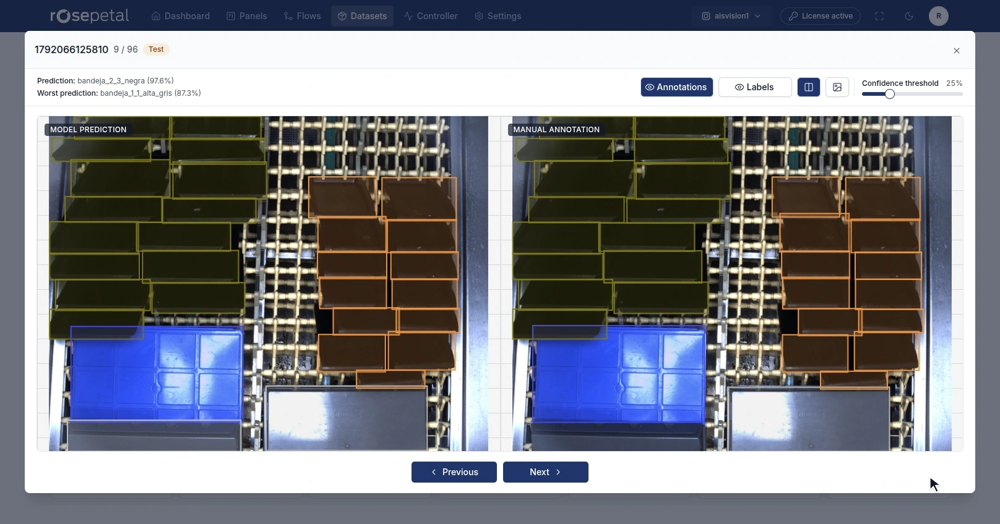
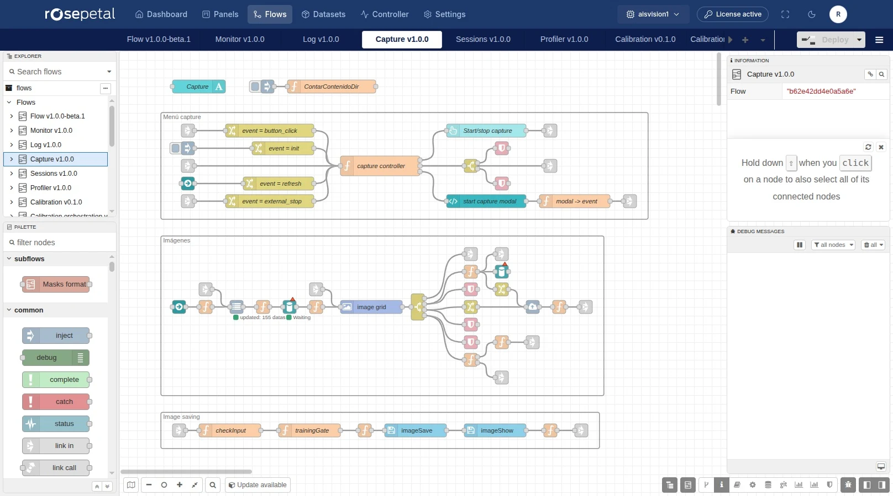

Un recorrido de trabajo, de principio a fin
Rosepetal reúne herramientas para preparar datos, entrenar modelos y utilizarlos en una aplicación de inspección. Cada pieza recibe su resultado, OK o NOK, con su puntuación, y los flujos de captura se editan en Node-RED.
Anotar
Etiquetado automático asistido
Herramientas del software
Auto Labeling: etiquetado automático inteligente
Smart Labeling: etiquetado inteligente asistido
SAM: segmentación inteligente asistida por IA

Entrenar
Evaluación del modelo entrenado
Anomaly detection: detección automática de anomalías

Validar
Predicciones y anotaciones, lado a lado
Validación del modelo
Validation: validación automática de resultados

Usar
Flujo de captura de imágenes, editado en Node-RED.
Detección OCR: reconocimiento automático de texto
